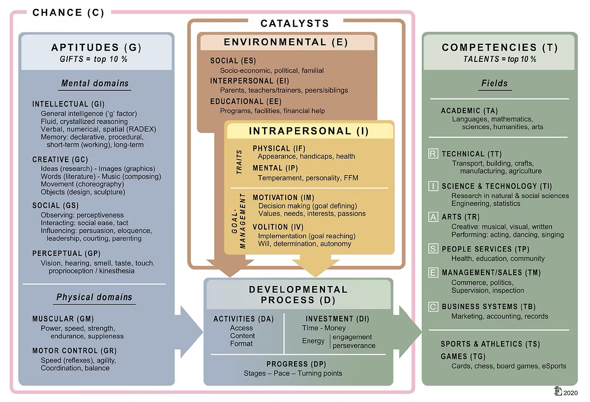

Helping underachieving gifted students break through the ceiling
Practical, research-anchored support for K–12 teachers — understanding why bright students underachieve, and what to actually do about it in the classroom.
Or jump straight to…
Understanding giftedness & underachievement
The concepts every section of this toolkit builds on.
What does "gifted" mean?
A student who demonstrates, or has the potential to demonstrate, ability significantly beyond same-age peers in one or more domains — intellectual, creative, social-emotional, or physical/sensorimotor. Giftedness is a potential, not a guarantee of high performance: whether that potential turns into visible achievement depends heavily on the conditions around the student (see Gagné's model, below).
What is an "underachieving gifted" student?
A student with demonstrated high ability or potential whose actual output — grades, work completed, engagement — sits persistently and significantly below that potential. It isn't laziness by default: it is usually a signal that something in the student, the environment, or both, is blocking the path from ability to achievement.
What is a "ceiling"?
Many gifted students coast through early schooling on natural ability alone, without ever needing to develop study strategies, planning, or tolerance for struggle. A ceiling is the point — often at a stage transition like Year 8 or Year 10 — where content finally demands more than raw ability. The student hits real difficulty for the first time and doesn't know how to work through it, because they've never had to learn how. This can look like sudden disengagement, avoidance, or a sharp grade drop.
Student voice & choice
Giving students real input into what they learn, how they show it, and at what pace is one of the most consistent protective factors against underachievement. Choice restores a sense of ownership and relevance that many gifted students lose when work feels pre-decided and too easy.
Anchor framework: Gagné's DMGT
The Differentiating Model of Giftedness and Talent (DMGT), developed by Françoys Gagné, is the framework this toolkit uses to explain giftedness and underachievement (see gagnefrancoys.wixsite.com/dmgt-mddt).

Gagné separates gifts — natural, untrained abilities in intellectual, creative, social-emotional, or sensorimotor domains — from talents — well-developed skills in a specific field, such as mathematics, music, or athletics. Gifts only become talents through a developmental process of learning, training and deliberate practice.
That process is shaped by catalysts:
Intrapersonal catalysts
Traits, physical/mental characteristics, motivation, volition, self-management and self-awareness — what the student brings to the process.
Environmental catalysts
Milieu, the people around the student, the provisions available to them, and significant events — what the world does to support or block that process.
Underachievement, in DMGT terms, happens when these catalysts block or fail to support the gift-to-talent pathway — not because the gift itself is missing.
Anchor framework for enrichment: the Williams Model
Frank Williams' model is used throughout the Enrichment Task Bank as a lens for designing tasks that build both thinking and feeling processes alongside subject content — not as a rigid checklist, but as a source of variety so every task doesn't ask for the same kind of thinking.
Every task in the enrichment bank is tagged with whichever of these processes it naturally draws on — a task might hit two or three at once — so you can filter for the kind of thinking you want a lesson to stretch.
Why does a gifted student underachieve?
Underachievement isn't one thing — it's what happens when the pathway from ability to achievement gets blocked. Gagné's DMGT gives us two places to look: inside the student, and around them.
Intrapersonal factors
Poor self-regulation and planning skills that were never needed until now; low self-efficacy despite high ability ("I'm not actually smart, I've just been lucky"); perfectionism that makes starting feel too risky; low motivation when work feels irrelevant or already mastered; anxiety and fear of failure.
Environmental factors
Curriculum pitched below the student's actual level; a classroom culture that rewards speed and compliance over depth; family or peer dynamics that discourage visible effort; under-identification, so the student's needs are never actually recognised; a lack of role models or provisions that stretch them.
A quick answer: what this can look like in a lesson
The Unreliable Recipe
Students are given a "recipe" for a mixture that a fictional company wants scaled up for mass production, but one ingredient doesn't mix properly at scale. Students identify the flaw, design a separation method, and pitch their fix to "the company".
Open-ended entry point with no single correct method; a real audience and product removes the "pointless worksheet" feeling.
Rewrite the Villain
Students take the antagonist from a class text and rewrite a pivotal scene entirely from that character's point of view — but every choice has to stay defensible against the actual text, not just invented sympathy.
Harder than a standard analytical paragraph, not easier — the textual constraint forces real interpretive argument instead of surface-level comprehension.
See the full Enrichment Task Bank for more like this →
What the research says
Research on this question spans systematic reviews mapping the internal and external factors behind gifted underachievement, meta-analyses on which interventions actually reverse it once it's set in, and ongoing work reconceptualising how underachievement itself should be defined — a reminder that this is an active, evolving area of research, not a solved problem.
Sources:
- The identification of gifted underachievement: Validity evidence for the commonly used methods (2022)
Read summary
Jackson and Jung (2022) show gifted underachievement is a genuine, measurable pattern — not just a subjective label — but that common identification methods disagree sharply with each other. The simple difference method (expected versus actual achievement) held up best; teacher nomination performed worst. For teachers, the takeaway is twofold: underachievement carries real socio-emotional costs, but which students get flagged depends heavily on how you look for them.
- Profiles of gifted students through the eyes of their teachers: identifying students at risk for underachievement (2026)
Read summary
Van der Weijden and colleagues (2026) tracked gifted primary students over three years and found four distinct profiles, from consistently strong to consistently struggling — and only about half of students stayed in the same profile throughout. Everyday classroom observations of behaviour and the teacher-student relationship, not just test scores, helped flag which gifted students were at risk of underachieving, often before it showed up in results.
- Addressing Disengagement and Underachievement for Gifted Learners — Ronksley-Pavia (free PDF)
Read summary
Ronksley-Pavia argues disengagement and underachievement, though often used interchangeably, are distinct: engagement is about active involvement in learning, underachievement is the gap between potential and output. A disengaged student isn’t always underachieving, and vice versa. For teachers, the practical value is in the distinction — these two patterns can call for genuinely different responses, and treating them as the same risks applying the wrong fix.
When underachievement looks like misbehaviour
Boredom, frustration and a mismatch between ability and task can look a lot like defiance, inattention, or disengagement — and gifted students are frequently misread, or even misdiagnosed, as a result.
Boredom-driven disruption
Under-challenged students may act out, daydream, or disengage — not because they can't do the work, but because there's nothing in it that requires their attention.
What can I do to support this?
Build in scope to go deeper rather than just faster: open-ended extension questions, choice in how a task is completed, or an early finish that leads into their own inquiry rather than more of the same worksheet. The goal isn't more work — it's more interesting work.
Misdiagnosis risk
James T. Webb's work highlights how traits common in gifted students — intensity, argumentativeness, inattention to uninteresting tasks — can be mistaken for ADHD, ODD, or other conditions, sometimes obscuring the real issue: unmet need.
What can I do to support this?
Before assuming ADHD or ODD, check whether the behaviour is strongly task-dependent — showing up mainly around unchallenging or repetitive work points toward unmet need rather than a standing disorder. Loop in the school counsellor or learning support team so giftedness is considered alongside any formal assessment, not after it.
Defiance as a control response
When a student has no meaningful say in their work, refusal can become one of the only forms of control available to them — connecting straight back to student voice and choice.
What can I do to support this?
Offer small, genuine choices in how — not whether — work gets done: order of tasks, format of a response, who they work with. A student who has some real say in their work has less need to make refusal the only form of control available to them.
The passion connection
Behaviour that looks like defiance or disengagement often eases once a student has a genuine passion area they're allowed to go deep on. It isn't a reward dangled for good behaviour — for many of these students it's the missing piece that reconnects effort with purpose, and the behaviour settles as a side effect of that, not a precondition for it.
Not sure what a student's passion area is? The SPARK Passion Survey is a quick tool that helps students identify their passion area.
See how to build a Student Passion Area into your teaching ↓
What the research says
James T. Webb's Misdiagnosis and Dual Diagnoses of Gifted Children and Adults remains the foundational text on this issue. More recent research has continued to explore the overlap and distinction between giftedness and conditions like ADHD.
- Misdiagnosis and Dual Diagnosis of Gifted Children — James T. Webb
Read summary
Webb’s foundational text argues gifted children and adults are frequently misdiagnosed because clinicians mistake traits of giftedness — intensity, restlessness, idealism, a habit of questioning authority — for symptoms of ADHD, Oppositional Defiant Disorder, Asperger’s, Bipolar Disorder or OCD. He also covers genuine dual diagnoses, where giftedness masks a real, coexisting condition rather than causing the behaviour outright.
- Cognitive characteristics of intellectually gifted children with a diagnosis of ADHD (2023) — free preprint
Read summary
Cornoldi, Giofrè and Toffalini (2023) studied twice-exceptional children with high intellectual ability and a formal ADHD diagnosis. Despite strong overall ability, these children showed consistently weaker working memory and processing speed, matching a genuine ADHD profile rather than giftedness being mistaken for it. The takeaway: giftedness and ADHD can genuinely co-occur, producing a profile combining real strength with real, separate challenge.
- Reframing Gifted Education: From Sorting Students to Cultivating Classroom-Based Opportunities — Del Siegle & Talbot S. Hook (2026)
Read summary
Siegle and Hook (2026) argue gifted education should shift from asking “who is gifted?” to “how do we build conditions that let talent develop?” They propose a Three Legs of Talent Development model — advanced content access, intellectually stimulating instruction, and interest-based authentic learning — delivered mainly through the general classroom rather than pull-out programs, making opportunity-rich teaching the primary way to grow talent in all students.
Student Passion Area
Passion is not a bonus activity bolted onto the "real" curriculum — it's one of the levers that actually reconnects underachieving gifted students with effort. Siegle and Hook's Three Legs of Talent Development model (cited above) gives a practical structure for building it into everyday teaching, and Reis, Renzulli & Renzulli's work on enrichment pedagogy backs each leg with decades of classroom-tested practice, rather than treating passion as a separate program.
Access to advanced content
Compacting the parts of the curriculum a student has already mastered — and using flexible acceleration where appropriate — frees up real classroom time that can be redirected toward their passion area, instead of asking them to simply do more of the same work at the same pace as everyone else. Reis, Renzulli & Renzulli note that research supports eliminating as much as 50–75% of the regular curriculum for gifted students who have already mastered it, substituting more challenging material in its place — a concrete sense of how much room compacting can actually open up.
Intellectually stimulating instruction
Depth, complexity, inquiry and genuine risk-taking keep a passion area intellectually alive rather than letting it become a shallow reward activity. Encourage open-ended questions, real problems without a single correct answer, and room to go further than the task technically asks for. Kaplan's depth-and-complexity framework, used within Reis, Renzulli & Renzulli's Enrichment Triad Model, gives this a concrete shape: have students dig into a topic's details, patterns, trends, unanswered questions, ethics, and big ideas, rather than stopping at surface-level facts.
Interest-based authentic learning
This is where passion identification does the most work. Once a student's passion area is known — the SPARK Passion Survey is a quick way to surface it — connect it to real disciplinary work: an authentic audience, a genuine problem in that field, or a product that matters beyond the classroom, rather than a generic "choose your own topic" worksheet. Reis, Renzulli & Renzulli call this Type III Enrichment — the student takes on the role of a first-hand inquirer rather than a consumer of pre-packaged content — and their longitudinal research found that students who completed this kind of project maintained those interests and carried matching career aspirations all the way through college and graduate school.
Sources:
- Reframing Gifted Education — Siegle & Hook (2026)
Read summary
Siegle and Hook (2026) argue gifted education should shift from asking “who is gifted?” to “how do we build conditions that let talent develop?” Their Three Legs of Talent Development model — advanced content, stimulating instruction, and interest-based learning, delivered mainly in the general classroom — structures this page. They also argue identification systems produce very different results depending on the measures and cutoffs used.
- Enrichment and Gifted Education Pedagogy to Develop Talents, Gifts, and Creative Productivity — Reis, Renzulli & Renzulli (2021)
Read summary
Reis, Renzulli and Renzulli (2021) give practical shape to the Three Legs model above. On advanced content: compact out already-mastered material and substitute harder work. On instruction: use Kaplan’s depth-and-complexity framework to push past surface facts. On interest-based learning: let students take on real inquiry for a genuine audience — research shows these projects can shape interests and careers well beyond school.
The inner experience of being gifted
Many gifted students feel things — and think about things — more intensely than their peers. Kazimierz Dabrowski's theory gives language to that intensity.
Overexcitabilities
Dabrowski described five heightened modes of response: psychomotor, sensual, intellectual, imaginational, and emotional. A student with strong emotional or intellectual overexcitability may feel everyday events far more intensely than peers — which can look like "overreacting" but is a genuine difference in intensity.
See what each type looks like in the classroom
- Psychomotor — a surplus of energy: rapid talking, fidgeting, restlessness, a drive to always be doing something. Easily mistaken for hyperactivity.
- Sensual — heightened pleasure or discomfort from sensory input (texture, taste, sound, light) and a strong aesthetic response to art, music or language.
- Intellectual — an intense drive to know, question and analyse: sustained curiosity, love of theory and problem-solving, sharp and probing observation.
- Imaginational — a vivid inner world: inventive thinking, dramatic play, rich imagery — which can also mean vivid fears or trouble staying anchored in the present task.
- Emotional — feelings experienced at high intensity: deep empathy, strong attachments, and an acute sense of right and wrong.
What can I do to support this?
Name the intensity for what it is rather than reading it as overreacting or poor self-control, and give it somewhere to go: movement breaks for psychomotor energy, a quieter or texture-friendly space for sensual sensitivity, open-ended questions for intellectual curiosity, creative outlets for imaginational energy, and a safe way to name big feelings for emotional intensity.
Asynchronous development
A student can be years ahead cognitively while being entirely age-typical — or even behind — socially and emotionally. That gap is often invisible to adults who only see the academic side, and it can be a major source of friction and isolation.
Imaginational and intellectual overexcitability are often the two most visible drivers of this gap: a student can be racing years ahead in ideas and abstract reasoning while still needing the same social-emotional scaffolding as any other child their age. The mismatch between a precociously theoretical mind and an age-typical capacity to regulate or communicate that intensity is exactly what makes asynchronous development so easy to miss when a teacher only sees strong academic output.
What can I do to support this?
Resist collapsing a student into one age or stage. Pair advanced content in their strength areas with age-typical expectations socially and emotionally, rather than assuming a student who reasons like an older peer will also cope like one — flexible groupings that separate academic pace from social activities respect both sides of the gap at once.
Perfectionism
When a student has rarely had to try, failure feels catastrophic rather than normal. Avoidance of starting a task can be safer than risking an imperfect result.
What can I do to support this?
Praise effort, strategy and process rather than outcome or innate talent, so a mistake reads as information rather than a verdict on who they are. Model your own visible struggle with a problem, and build in low-stakes chances to attempt, fail safely, and revise before anything is marked or shared.
What the research says
Dabrowski's Theory of Positive Disintegration remains the central framework for understanding gifted emotional intensity, and continues to be studied and applied in gifted education research.
- Overexcitabilities in Young Highly to Profoundly Gifted Learners — open access
Read summary
Wood and colleagues (2024) studied highly to profoundly gifted children through parent questionnaires and interviews, framed by Dabrowski’s theory of overexcitability. Nearly all participants showed three or more overexcitabilities operating together, most commonly emotional, intellectual and imaginational. The authors argue overexcitability assessment should be built into gifted identification itself, so these traits aren’t misread as behavioural or emotional disorders.
- Emotional and social well-being of gifted adolescents — Pinxten (2026)
Read summary
Frumau-van Pinxten and colleagues (2026) compared the emotional and social well-being of gifted and highly gifted adolescents against same-age peers across the ability spectrum. They found no meaningful difference in mental health, social adequacy or ego development between groups. The finding challenges the common assumption that giftedness brings vulnerability or social maladjustment — a stereotype the authors argue can itself hinder these students’ development.
- School Experiences of Gifted Adolescents and Their Peers — Carter (2025)
Read summary
Carter, Avci and Mammadov (2025) compared the school experiences of gifted and non-identified students and found no overall difference between the groups. However, about a third of gifted students reported feeling stigmatised for their giftedness — and those students had notably weaker teacher and peer relationships, lower social adjustment, and a lower sense of belonging than gifted peers who felt no such stigma.
When giftedness and a learning difficulty co-occur
A student can be gifted and have a diagnosed learning difficulty, such as dyslexia, ADHD, or autism, at the same time. These students — once called "twice-exceptional," now more often "2e+" to reflect that more than one exceptionality can be involved — are some of the most frequently missed students in a school, in both directions.
The masking effect
Giftedness can compensate for a learning difficulty well enough that it goes unnoticed for years. A learning difficulty can suppress test scores and output enough that the giftedness is never identified. Or the two can cancel each other out, leaving a student who tests as "perfectly average" while being neither — and receiving no support for either.
Under-identification
2e+ students are consistently under-identified for gifted programs, because most identification processes look for consistently high performance across the board — something these students, by definition, often can't show.
Strengths-based support
Susan Baum's work emphasises identifying and building on the student's areas of strength first, rather than starting from the deficit — using their giftedness as the entry point into supporting the learning difficulty, not treating the two as separate problems to solve one at a time.
Anchor framework: Baum's Talent Centered Model
Susan Baum's Talent Centered Model is a strengths-first framework for supporting 2e+ students, deliberately flexible so it can be adapted to each student's particular profile rather than applied as a one-size-fits-all program. It works through six elements held together at once, not tackled one at a time:
1. Talent development
Actively nurturing the student's genuine strengths and abilities, not just managing the difficulty around them.
2. Appropriate learning environment
A supportive space built for a learner who is both advanced and struggling at once.
3. Intellectually challenging curriculum
Real rigour — underachievement risk rises further if the gifted side is left unchallenged while the difficulty is being addressed.
4. Differentiated instruction & accommodations
Teaching and adjustments tailored to the individual student's specific combination of strengths and needs.
5. Targeted remediation
Direct, specific support for the actual skill gaps involved — not a generic catch-all intervention.
6. Social & emotional support
Attending to the wellbeing cost of navigating both exceptionalities at once, which is significant and easy to overlook.
Notably, Baum's model is designed to work in a regular classroom with support from counsellors and gifted resource teachers — it doesn't require a specialised program to get started.
What the research says
Alongside Baum's own foundational work — including her widely-used operational definition of twice-exceptional learners, developed with Sally Reis and Edith Burke — Australian research specifically on this population is still developing. Existing prevalence estimates and advocacy work point the same direction as Baum's work internationally: these students exist in meaningful numbers in Australian classrooms and are routinely missed by identification processes designed around a single profile of giftedness.
- Special Education Status and Underidentification of Twice-Exceptional Students: Insights from ECLS-K Data (2024)
Read summary
Jolly and Barnard-Brak (2024) used a large, nationally representative US dataset to put a hard number on under-identification, finding that roughly 1 in 9 students currently in gifted programs should statistically be twice-exceptional but aren’t recognised as such. Students most likely to be missed were male, non-White, from low-income households, or showing internalising problems like anxiety. Disability status itself acts as a barrier to being seen as gifted.
- Compounded Disadvantage: Issues in Addressing the Educational Requirements of Twice-Exceptional Students in Schools (2025)
Read summary
Ronksley-Pavia and Clark (2025) gathered stakeholder views on why twice-exceptional students fall through the cracks in Australian schools: a policy gap between mandatory disability support and discretionary gifted education, little teacher training, masking effects, and mainstream classrooms lacking differentiated instruction. Without school-based support, families absorb the advocacy and cost themselves. These gaps don’t just add up — they compound each other.
You don't have to do this alone
Supporting a 2e+ or underachieving gifted student can feel like a solo job from the classroom — but a school counsellor is often the single best-placed person to help carry it, for both you and the student.
A second set of eyes on identification
A counsellor can help distinguish giftedness-driven behaviour from a genuine mental-health or developmental concern, and can advocate for formal identification when a student's profile doesn't fit the usual pattern — especially for 2e+ students who are routinely missed by standard screening.
One-on-one, not just group, support
For 2e+ students especially, individual counselling tends to work better than group programs — role-playing tricky social situations, teaching executive-functioning skills, and building confidence through targeted, one-on-one work rather than a generic group session.
A bridge between you, the student and home
Ongoing communication with families — particularly from early high school onward — and a shared conversation about subject choices, options and what "ready" actually looks like for this specific student, rather than leaving that coordination to the classroom teacher alone.
Someone to loop in early, not last
Bringing a counsellor in alongside any formal assessment, not only after a crisis, means giftedness and any co-occurring need can be considered together from the start — not addressed one after the other once something has already gone wrong.
What the research says
Direct research on the counsellor's specific role with gifted and 2e+ students is still a developing area — this section will grow as more free, peer-reviewed studies are found.
- How Do Interprofessional Practice Teams Work Together to Identify and Provide for Gifted Students with Multiple Exceptionalities? — O’Brien, Riley & Holley-Boen (2017)
Read summary
O’Brien, Riley and Holley-Boen studied seven interprofessional teams supporting gifted students with multiple exceptionalities, and found real gaps: limited shared understanding of these students’ needs, unclear ownership of who’s responsible, and patchy communication — three of the seven teams never met as a group at all. They recommend structured, regular meetings and treating students and families as full team members, not just subjects of discussion.
Stage 4 & 5 enrichment tasks, by subject
Enrichment, not extension: tasks that go deeper and wider, not just more of the same. Every card is tagged with the Williams Model process(es) it draws on — filter to find the kind of thinking you want to stretch, across every subject below.
Maths — Stage 4 & 5
Science — Stage 4 & 5
English — Stage 4 & 5
History — Stage 4 & 5
Geography — Stage 4 & 5
Music — Stage 4 & 5
PDHPE — Stage 4 & 5
Technology — Stage 4
Technology is a mandatory Years 7–8 course only — at Stage 5 it splits into separate elective subjects, two of which are covered below.
Computing Technology — Stage 5 elective
Industrial Technology (Timber) — Stage 5 elective
Industrial Technology is taught as one chosen specialisation per school; these tasks cover Timber.
Industrial Technology (Multimedia) — Stage 5 elective
Industrial Technology is taught as one chosen specialisation per school; these tasks cover Multimedia.
Art (Visual Arts) — Stage 4 & 5
Other subjects
Gifted learning resources, by age group
A growing, hand-picked list of external gifted-education resources, grouped by the age of the students they best suit.
K–6
- Gifted With Goldens — Gifted Teacher Toolbox: Academic Resources
A teacher toolbox of academic enrichment resources for gifted students in the K–5 years.
7–10
- UNSW GERRIC — Professional Development Package for Teachers (Modules)
Free downloadable professional-learning modules on gifted and high-potential education, organised by stage and complexity.
11–12
- UNSW GERRIC — Professional Development Package for Teachers (Modules)
Free downloadable professional-learning modules on gifted and high-potential education, organised by stage and complexity.
All ages
- Educational Development Services — Gifted Education Resources
A broad directory of gifted-education links and resources spanning every year level.
- UNSW GERRIC — Gifted Education (resources for students & parents)
UNSW's Gifted Education Research, Resource and Information Centre — guidance and resources for gifted students and their families.
- NSW Department of Education — Differentiation Adjustment Strategies
Practical differentiation and adjustment strategies from the NSW High Potential and Gifted Education policy — for implementing support across the classroom.
- UNSW GERRIC — Gifted Education Resources
The GERRIC resource library — articles, guides and tools on gifted education for teachers and schools.
Speak the same language as your students
This section (in progress) will cover practical teacher-facing strategies for supporting gifted learners day-to-day. In the meantime, here's a resource already doing half the job.
Help Me Learn
A companion, student-facing site covering learning strategies, study techniques, and James Anderson's Learnership framework — written directly for students in Grades 6–10. Knowing what your students are seeing here means you can reinforce the same language and strategies in class, rather than introducing something new.
Visit Help Me Learn →All the "what can I do" guidance, in one place
Every practical strategy on this site, gathered here so you don't have to hunt for it. Each one still lives on its full page — click through for the complete guidance and the research behind it.
Boredom-driven disruption
Build in scope to go deeper rather than just faster: open-ended extension questions, choice in how a task is completed, or an early finish that leads into their own inquiry.
See full guidance →Misdiagnosis risk
Check whether the behaviour is strongly task-dependent before assuming ADHD or ODD, and loop in the school counsellor alongside any formal assessment, not after it.
See full guidance →Defiance as a control response
Offer small, genuine choices in how — not whether — work gets done: order of tasks, format of a response, who they work with.
See full guidance →Overexcitabilities
Name the intensity for what it is rather than reading it as overreacting, and give it somewhere to go — movement, a quieter space, open-ended questions, creative outlets, or a safe way to name big feelings.
See full guidance →Asynchronous development
Pair advanced content in a student's strength areas with age-typical social-emotional expectations, using flexible groupings that separate academic pace from social activities.
See full guidance →Perfectionism
Praise effort, strategy and process rather than outcome, model your own visible struggle, and build in low-stakes chances to attempt, fail safely, and revise.
See full guidance →